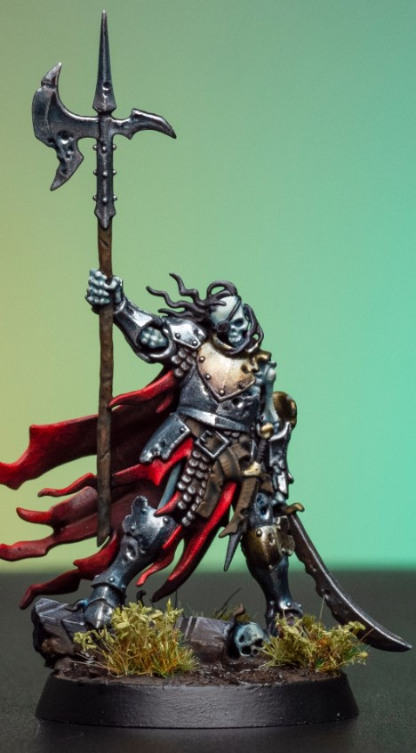
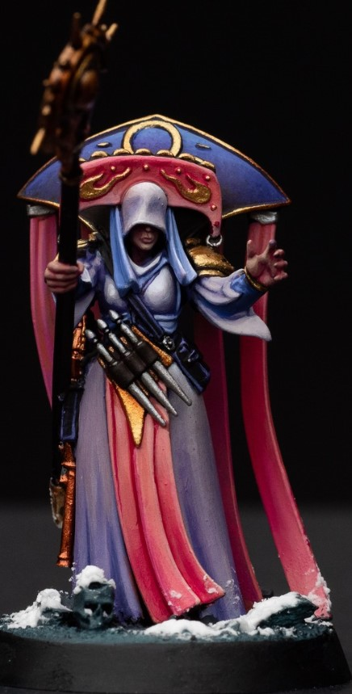
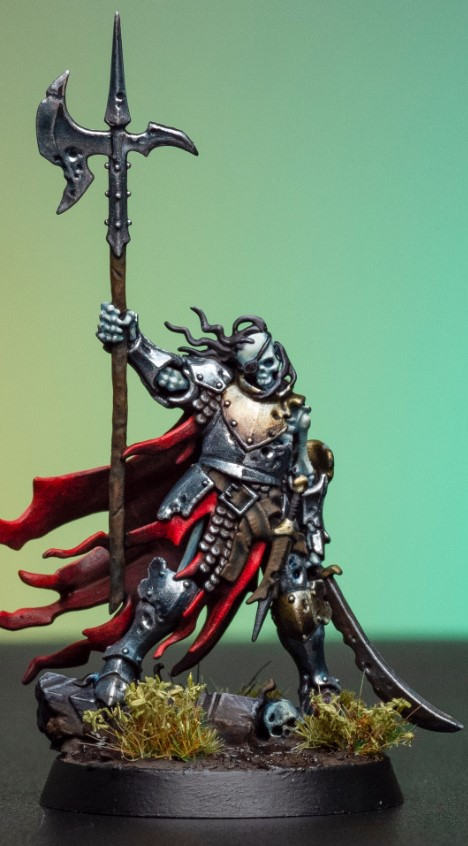
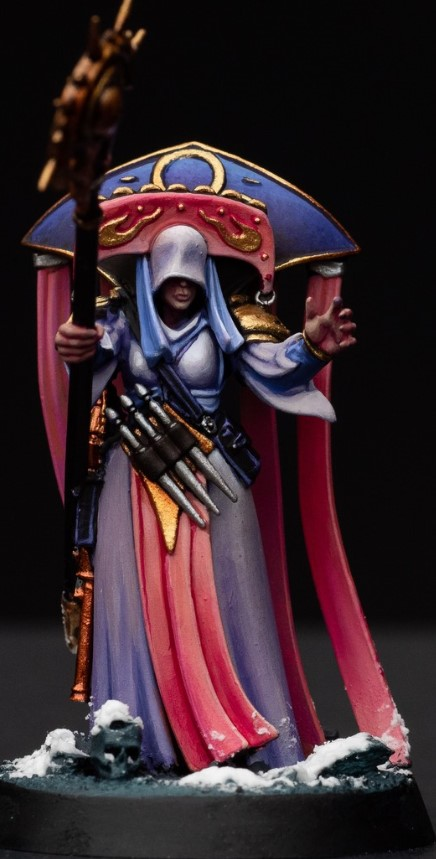

Marc Nerez Personal Profile
Introduction
This is the very first time I'm attempting to do a website. I hope it works out!
My name is Marc Angelo A. Nerez, as stated above, I am 33 years old. This is my 2nd course, and I'm eager to learn more about developing programs.
I have two kids and i'm currently working as a Customer Relations Manager for a security agency. My work includes traveling locally if needed.
Previously, I was a Sales Professional for Makati Ford, and before that, I was a Citiphone Officer for Citibank BGC.
I'm from Baguio City!
Personal Information
- Full Name: Marc Angelo A. Nerez
- Nickname: Makki
- Age: 33
- Senior High School Graduated From: Our Lady of Mt. Carmel Montessori, Baguio City
- City the High School is located at: Baguio City
- Course: BSIT-MI, Bachelor of Science in Information Technology with specialization in Mobile and Internet Technology
- Scholarship: No
- Transferee / Second Course: Second Course
- Did you choose this course? Yes
- Why Yes? I always wanted to learn how to code and make my own application or website
- If No, what course would you choose? N/A
- Experience: Programming / Gaming / Others
- All of my experiences regarding the following are the subjects that I have finished in APC. Other than that, none.
- Expectations from Web Programming Course: Learn how to make a website
- Learning Goals for Chosen Major: Learning how to make a website is an important aspect in my course goals in life.
- Goals in Life: To live a comfortable life
- Dream to Fulfill: I’m still figuring that out as of now. Having kids makes your dream change constantly.
- Other Interesting Aspects: I have two kids, I’m currently working at a security agency, and the last time I attended college was way back in 2014 after I finished my course in Business.
Hobbies
| Hobby |
Best things about it |
Worst things about it |
| Painting Miniatures |
- Exercises my creativity
- very relaxing
|
|
| Working out/ Weight lifting |
- It increases my endurance
- Beneficial to overall health
|
- May lead to injury if not done right
- Consistency is crucial, skipping may lead to weight gain
|
| Reading Comic books |
- Entertaining
- Gives you some insight to understanding different perspectives
- Cheaper hobby compared to painting miniatures
- Enhances your vocabulary
|
- Hard to find time to read a graphic novel
- The stigma other people have that comics are for kids
|
| Playing Video Games |
- Entertaining
- Highly enjoyable
- Improves cognitive functions
- Improves Social skills
|
- Time consuming
- May be a major distraction if you don't have self-control
|
| Travelling |
- broadens your horizons
- Priceless memories
- Meet a lot of people
- Improves Social skills
- Allows you to discover new things about yourself
|
|
Art that I'm into
Visual Arts
Jorge Jimenez


DC 2 page spread illustrations by Jorge Jimenez by Jorge Jimenez.
Scott Walter AKA Miniac
  
 
Miniatures painted by Scott Walter posted on his Instagram